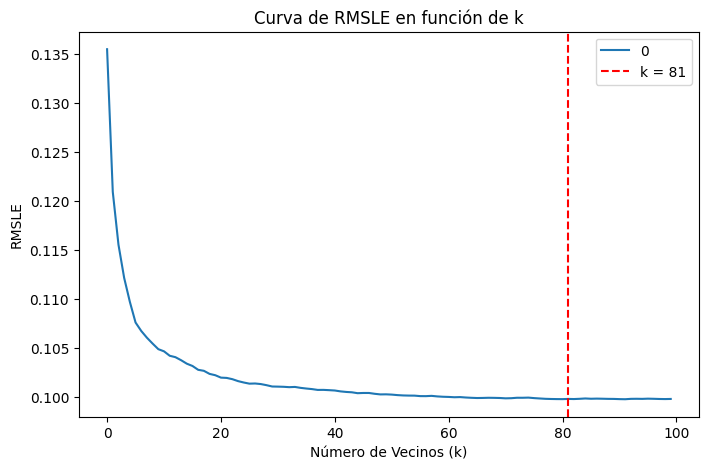

K-Nearest Neighbors - KNN Model#
KNN - (K-Nearest Neighbors)#
import numpy as np
import pandas as pd
import matplotlib.pyplot as plt
import seaborn as sns
import warnings
warnings.filterwarnings('ignore')
import plotly.express as px
import plotly.graph_objects as go
from sklearn.model_selection import train_test_split
from sklearn.linear_model import LinearRegression
from sklearn.metrics import mean_squared_error, r2_score
import os
for dirname, _, filenames in os.walk('/kaggle/input'):
for filename in filenames:
print(os.path.join(dirname, filename))
ruta = r'C:\Users\jthow\iCloudDrive\Documents\3_Maestria_Estadistica_UNINORTE\3_Tercer_Semestre\Machine_Learning\tornados.csv.zip'
df = pd.read_csv(ruta)
df.isnull().sum()
om 0
yr 0
mo 0
dy 0
date 0
time 0
tz 0
datetime_utc 0
st 0
stf 0
mag 756
inj 0
fat 0
loss 27170
slat 0
slon 0
elat 0
elon 0
len 0
wid 0
ns 0
sn 0
f1 0
f2 0
f3 0
f4 0
fc 0
dtype: int64
df['loss'] = df['loss'].replace(0, pd.NA)
df['loss'] = df['loss'].interpolate(method='linear')
# Imputar los valores NaN con la media de la columna 'mag'
df['mag'] = df['mag'].fillna(df['mag'].mean())
df.isnull().sum()
om 0
yr 0
mo 0
dy 0
date 0
time 0
tz 0
datetime_utc 0
st 0
stf 0
mag 0
inj 0
fat 0
loss 0
slat 0
slon 0
elat 0
elon 0
len 0
wid 0
ns 0
sn 0
f1 0
f2 0
f3 0
f4 0
fc 0
dtype: int64
pip install mglearn
Requirement already satisfied: mglearn in c:\users\jthow\miniconda3\envs\ml_venv\lib\site-packages (0.2.0)Note: you may need to restart the kernel to use updated packages.
Requirement already satisfied: numpy in c:\users\jthow\miniconda3\envs\ml_venv\lib\site-packages (from mglearn) (1.26.0)
Requirement already satisfied: matplotlib in c:\users\jthow\miniconda3\envs\ml_venv\lib\site-packages (from mglearn) (3.8.0)
Requirement already satisfied: scikit-learn in c:\users\jthow\miniconda3\envs\ml_venv\lib\site-packages (from mglearn) (1.6.1)
Requirement already satisfied: pandas in c:\users\jthow\miniconda3\envs\ml_venv\lib\site-packages (from mglearn) (2.1.1)
Requirement already satisfied: pillow in c:\users\jthow\miniconda3\envs\ml_venv\lib\site-packages (from mglearn) (10.0.1)
Requirement already satisfied: cycler in c:\users\jthow\miniconda3\envs\ml_venv\lib\site-packages (from mglearn) (0.12.1)
Requirement already satisfied: imageio in c:\users\jthow\miniconda3\envs\ml_venv\lib\site-packages (from mglearn) (2.31.6)
Requirement already satisfied: joblib in c:\users\jthow\miniconda3\envs\ml_venv\lib\site-packages (from mglearn) (1.3.2)
Requirement already satisfied: contourpy>=1.0.1 in c:\users\jthow\miniconda3\envs\ml_venv\lib\site-packages (from matplotlib->mglearn) (1.2.0)
Requirement already satisfied: fonttools>=4.22.0 in c:\users\jthow\miniconda3\envs\ml_venv\lib\site-packages (from matplotlib->mglearn) (4.43.1)
Requirement already satisfied: kiwisolver>=1.0.1 in c:\users\jthow\miniconda3\envs\ml_venv\lib\site-packages (from matplotlib->mglearn) (1.4.5)
Requirement already satisfied: packaging>=20.0 in c:\users\jthow\miniconda3\envs\ml_venv\lib\site-packages (from matplotlib->mglearn) (23.2)
Requirement already satisfied: pyparsing>=2.3.1 in c:\users\jthow\miniconda3\envs\ml_venv\lib\site-packages (from matplotlib->mglearn) (3.1.1)
Requirement already satisfied: python-dateutil>=2.7 in c:\users\jthow\miniconda3\envs\ml_venv\lib\site-packages (from matplotlib->mglearn) (2.8.2)
Requirement already satisfied: importlib-resources>=3.2.0 in c:\users\jthow\miniconda3\envs\ml_venv\lib\site-packages (from matplotlib->mglearn) (6.1.1)
Requirement already satisfied: pytz>=2020.1 in c:\users\jthow\miniconda3\envs\ml_venv\lib\site-packages (from pandas->mglearn) (2023.3)
Requirement already satisfied: tzdata>=2022.1 in c:\users\jthow\miniconda3\envs\ml_venv\lib\site-packages (from pandas->mglearn) (2023.3)
Requirement already satisfied: scipy>=1.6.0 in c:\users\jthow\miniconda3\envs\ml_venv\lib\site-packages (from scikit-learn->mglearn) (1.10.1)
Requirement already satisfied: threadpoolctl>=3.1.0 in c:\users\jthow\miniconda3\envs\ml_venv\lib\site-packages (from scikit-learn->mglearn) (3.2.0)
Requirement already satisfied: zipp>=3.1.0 in c:\users\jthow\miniconda3\envs\ml_venv\lib\site-packages (from importlib-resources>=3.2.0->matplotlib->mglearn) (3.17.0)
Requirement already satisfied: six>=1.5 in c:\users\jthow\miniconda3\envs\ml_venv\lib\site-packages (from python-dateutil>=2.7->matplotlib->mglearn) (1.16.0)
pip install -r requirements.txt
Processing c:\home\conda\feedstock_root\build_artifacts\colorama_1733218098505\work (from -r requirements.txt (line 14))
Note: you may need to restart the kernel to use updated packages.
ERROR: Could not install packages due to an OSError: [Errno 2] No such file or directory: 'C:\\home\\conda\\feedstock_root\\build_artifacts\\colorama_1733218098505\\work'
# Crear la columna 'mortality' en el DataFrame original
df['mortality'] = df['fat'].apply(lambda x: 0 if x == 0 else 1)
# Renombrar el DataFrame a 'mortality_target'
mortality_target = df
import numpy as np
# Crear la columna 'mortality' con 0 si 'fat' es 0, y 1 si 'fat' es mayor que 0
df['mortality'] = np.where(df['fat'] == 0, 0, 1)
# Contar la cantidad de ceros y unos
print("Cantidad de ceros:", (df['mortality'] == 0).sum())
print("Cantidad de unos:", (df['mortality'] == 1).sum())
# Asignar el DataFrame modificado a 'tornados.target'
tornados_target = df
Cantidad de ceros: 67120
Cantidad de unos: 1573
from sklearn.model_selection import train_test_split
X = tornados_target[['om', 'yr', 'mo', 'dy', 'stf', 'mag', 'inj', 'loss', 'slat', 'slon', 'elat', 'elon', 'len', 'wid', 'ns', 'sn', 'f1', 'f2', 'f3', 'f4']]
y = df['mortality']
# Importar las bibliotecas necesarias
import pandas as pd
from sklearn.model_selection import train_test_split
from sklearn.neighbors import KNeighborsClassifier
import matplotlib.pyplot as plt
# Seleccionar las características y la variable objetivo
X = tornados_target[['mag', 'slat', 'slon', 'elat', 'elon', 'len', 'wid','f1', 'f2', 'f3', 'f4']]
y = df['mortality']
# Dividir los datos en conjunto de entrenamiento y prueba
X_train, X_test, y_train, y_test = train_test_split(X, y, stratify=y, random_state=66)
# Listas para almacenar la exactitud en entrenamiento y prueba
training_accuracy = []
test_accuracy = []
# Configuración de los vecinos
neighbors_settings = range(1, 20)
# Bucle para ajustar el modelo con diferentes números de vecinos
for n_neighbors in neighbors_settings:
clf = KNeighborsClassifier(n_neighbors=n_neighbors)
clf.fit(X_train, y_train)
training_accuracy.append(clf.score(X_train, y_train))
test_accuracy.append(clf.score(X_test, y_test))
# Graficar los resultados
plt.plot(neighbors_settings, training_accuracy, label="Training accuracy")
plt.plot(neighbors_settings, test_accuracy, label="Test accuracy")
plt.ylabel("Accuracy")
plt.xlabel("n_neighbors")
plt.legend();
clf = KNeighborsClassifier(n_neighbors=12)
clf.fit(X_train, y_train)
KNeighborsClassifier(n_neighbors=12)In a Jupyter environment, please rerun this cell to show the HTML representation or trust the notebook.
On GitHub, the HTML representation is unable to render, please try loading this page with nbviewer.org.
KNeighborsClassifier(n_neighbors=12)
print(clf.score(X_train, y_train), clf.score(X_test, y_test))
0.9774063937576428 0.9767089786887155
from sklearn.model_selection import cross_val_score
from sklearn.neighbors import KNeighborsClassifier
from sklearn.model_selection import train_test_split
from sklearn.datasets import load_breast_cancer
import numpy as np
# Dividir los datos en conjunto de entrenamiento y prueba
X_train, X_test, y_train, y_test = train_test_split(X, y, stratify=y, random_state=66)
best_score = 0
for n_neighbors in range(1, 20):
knn = KNeighborsClassifier(n_neighbors=n_neighbors)
scores = cross_val_score(knn, X_train, y_train, cv=5)
score = np.mean(scores)
if score > best_score:
best_score = score
best_parameters = {'n_neighbors': n_neighbors}
print("Best cross-validation accuracy: {:.2f}".format(best_score))
print("Best parameters: ", best_parameters)
Best cross-validation accuracy: 0.98
Best parameters: {'n_neighbors': 19}
knn = KNeighborsClassifier(**best_parameters)
knn.fit(X_train, y_train)
KNeighborsClassifier(n_neighbors=19)In a Jupyter environment, please rerun this cell to show the HTML representation or trust the notebook.
On GitHub, the HTML representation is unable to render, please try loading this page with nbviewer.org.
KNeighborsClassifier(n_neighbors=19)
print("Train set accuracy:", knn.score(X_train, y_train), "; Test set accuracy:", knn.score(X_test, y_test))
Train set accuracy: 0.9773481628137192 ; Test set accuracy: 0.9767089786887155
pip install mglearn
import mglearn
pip install neighbors
from sklearn.neighbors import KNeighborsRegressor
from sklearn.neighbors import KNeighborsRegressor
from sklearn.metrics import mean_squared_log_error
import numpy as np
rmsle_val = []
best_rmsle = 1.0
for k in range(100):
k = k + 1
knn = KNeighborsRegressor(n_neighbors=k)
knn.fit(X_train, y_train)
y_pred = knn.predict(X_test)
rmsle = np.sqrt(mean_squared_log_error(y_test, y_pred))
if rmsle < best_rmsle:
best_rmsle = rmsle
best_k = k
rmsle_val.append(rmsle)
print('RMSLE value for k= ', k, 'is:', rmsle)
print(f"Best RMSLE: {best_rmsle}, Best k: {best_k}")
RMSLE value for k= 1 is: 0.13546953854440158
RMSLE value for k= 2 is: 0.12090513126488696
RMSLE value for k= 3 is: 0.1155160159994345
RMSLE value for k= 4 is: 0.11212014930410885
RMSLE value for k= 5 is: 0.10967778662617866
RMSLE value for k= 6 is: 0.107567208273545
RMSLE value for k= 7 is: 0.1067041206147654
RMSLE value for k= 8 is: 0.10601265319438839
RMSLE value for k= 9 is: 0.10541229696287936
RMSLE value for k= 10 is: 0.10484507280056587
RMSLE value for k= 11 is: 0.10462340270845794
RMSLE value for k= 12 is: 0.10417262474443371
RMSLE value for k= 13 is: 0.10402800231487816
RMSLE value for k= 14 is: 0.10371766560078025
RMSLE value for k= 15 is: 0.10336422228363012
RMSLE value for k= 16 is: 0.10312909771182206
RMSLE value for k= 17 is: 0.10273767189003513
RMSLE value for k= 18 is: 0.10263497169263003
RMSLE value for k= 19 is: 0.10232120644202577
RMSLE value for k= 20 is: 0.10218604371919347
RMSLE value for k= 21 is: 0.10193943145636648
RMSLE value for k= 22 is: 0.10191043984330543
RMSLE value for k= 23 is: 0.10178237983179983
RMSLE value for k= 24 is: 0.10158415923881872
RMSLE value for k= 25 is: 0.10144184291430328
RMSLE value for k= 26 is: 0.10132397668335084
RMSLE value for k= 27 is: 0.10134055572581423
RMSLE value for k= 28 is: 0.1012821724474008
RMSLE value for k= 29 is: 0.10116937205864873
RMSLE value for k= 30 is: 0.10103286822930632
RMSLE value for k= 31 is: 0.10102085843399634
RMSLE value for k= 32 is: 0.10100306013617846
RMSLE value for k= 33 is: 0.10096556519526204
RMSLE value for k= 34 is: 0.10098897934535511
RMSLE value for k= 35 is: 0.10089345726312031
RMSLE value for k= 36 is: 0.1008260265334297
RMSLE value for k= 37 is: 0.10076828707004204
RMSLE value for k= 38 is: 0.1006840910629204
RMSLE value for k= 39 is: 0.10068926930670179
RMSLE value for k= 40 is: 0.10065970178451876
RMSLE value for k= 41 is: 0.10062480808009452
RMSLE value for k= 42 is: 0.10053540153965021
RMSLE value for k= 43 is: 0.1004779687069034
RMSLE value for k= 44 is: 0.10044200604914583
RMSLE value for k= 45 is: 0.10035079441419201
RMSLE value for k= 46 is: 0.10037280254490269
RMSLE value for k= 47 is: 0.10037217178847024
RMSLE value for k= 48 is: 0.10028864668017798
RMSLE value for k= 49 is: 0.10022588119660633
RMSLE value for k= 50 is: 0.10023413254757096
RMSLE value for k= 51 is: 0.10020628430860522
RMSLE value for k= 52 is: 0.10015480725784463
RMSLE value for k= 53 is: 0.10012095109065099
RMSLE value for k= 54 is: 0.10010595561052615
RMSLE value for k= 55 is: 0.10010102887639391
RMSLE value for k= 56 is: 0.10005221058446347
RMSLE value for k= 57 is: 0.10004898241683138
RMSLE value for k= 58 is: 0.10007744740105853
RMSLE value for k= 59 is: 0.10002161790537416
RMSLE value for k= 60 is: 0.09998650901686452
RMSLE value for k= 61 is: 0.09996863542537777
RMSLE value for k= 62 is: 0.0999366456220779
RMSLE value for k= 63 is: 0.09995282599727848
RMSLE value for k= 64 is: 0.09990971831419578
RMSLE value for k= 65 is: 0.09987910718184613
RMSLE value for k= 66 is: 0.09985733150257857
RMSLE value for k= 67 is: 0.09986622686442106
RMSLE value for k= 68 is: 0.09988243529414105
RMSLE value for k= 69 is: 0.0998741589810527
RMSLE value for k= 70 is: 0.09985957411731988
RMSLE value for k= 71 is: 0.09982579274957021
RMSLE value for k= 72 is: 0.09983961790453058
RMSLE value for k= 73 is: 0.09988409836699969
RMSLE value for k= 74 is: 0.09988275659675404
RMSLE value for k= 75 is: 0.09989914901087973
RMSLE value for k= 76 is: 0.09984865728046462
RMSLE value for k= 77 is: 0.0998107791585606
RMSLE value for k= 78 is: 0.0997759304469263
RMSLE value for k= 79 is: 0.09975866687185853
RMSLE value for k= 80 is: 0.09974861607414046
RMSLE value for k= 81 is: 0.09974436823196388
RMSLE value for k= 82 is: 0.09976525054199888
RMSLE value for k= 83 is: 0.09975263683712526
RMSLE value for k= 84 is: 0.0997771035775929
RMSLE value for k= 85 is: 0.09981113021459023
RMSLE value for k= 86 is: 0.099782997725723
RMSLE value for k= 87 is: 0.09979635862170609
RMSLE value for k= 88 is: 0.09978494211503011
RMSLE value for k= 89 is: 0.09977084751243559
RMSLE value for k= 90 is: 0.09976569862380609
RMSLE value for k= 91 is: 0.0997448691804706
RMSLE value for k= 92 is: 0.09973467307345082
RMSLE value for k= 93 is: 0.09977242820303027
RMSLE value for k= 94 is: 0.09977929726139877
RMSLE value for k= 95 is: 0.09977005042810075
RMSLE value for k= 96 is: 0.099791341053426
RMSLE value for k= 97 is: 0.09977778451933092
RMSLE value for k= 98 is: 0.09975977905471116
RMSLE value for k= 99 is: 0.09975053487990926
RMSLE value for k= 100 is: 0.09976250731361341
Best RMSLE: 0.09973467307345082, Best k: 92
import pandas as pd
import matplotlib.pyplot as plt
curve = pd.DataFrame(rmsle_val)
curve.plot(figsize=(8,5))
# Etiquetas para los ejes
plt.xlabel('Número de Vecinos (k)')
plt.ylabel('RMSLE')
# Título opcional para mejorar la comprensión
plt.title('Curva de RMSLE en función de k')
# Resaltar k=81
plt.axvline(x=81, color='r', linestyle='--', label='k = 81')
# Añadir una leyenda para identificar la línea
plt.legend()
plt.show()

from sklearn.neighbors import KNeighborsRegressor # Importa desde sklearn.neighbors
# Ahora puedes crear el modelo sin el error
knn = KNeighborsRegressor(n_neighbors=81)
knn.fit(X_train, y_train)
y_pred = knn.predict(X_test)
score = knn.score(X_test, y_test)
print(f"Score del modelo: {score}")
Score del modelo: 0.08045335027001854
from sklearn.preprocessing import StandardScaler
from sklearn.model_selection import train_test_split
from sklearn.neighbors import KNeighborsRegressor
# Normalización de los datos
scaler = StandardScaler()
X_train_scaled = scaler.fit_transform(X_train)
X_test_scaled = scaler.transform(X_test)
# Entrenar el modelo con los datos escalados
knn = KNeighborsRegressor(n_neighbors=31)
knn.fit(X_train_scaled, y_train)
y_pred = knn.predict(X_test_scaled)
score = knn.score(X_test_scaled, y_test)
print(f"Score del modelo después de escalar: {score}")
Score del modelo después de escalar: 0.2231022543147656
from sklearn.metrics import r2_score, mean_absolute_error, explained_variance_score, mean_squared_error, mean_squared_log_error
# Cálculos de las métricas
r2_valid = r2_score(y_test, y_pred)
mae_valid = mean_absolute_error(y_test, y_pred)
evs_valid = explained_variance_score(y_test, y_pred, multioutput='uniform_average')
rmse_valid = np.sqrt(mean_squared_error(y_test, y_pred))
rmsle_valid = np.sqrt(mean_squared_log_error(y_test, y_pred))
# Mostrar los resultados
print('R2 Valid:', r2_valid)
print('EVS Valid:', evs_valid)
print('MAE Valid:', mae_valid)
print('RMSE Valid:', rmse_valid)
print('RMSLE Valid:', rmsle_valid)
R2 Valid: 0.2231022543147656
EVS Valid: 0.22327390077095421
MAE Valid: 0.03371750996442483
RMSE Valid: 0.13180007759882814
RMSLE Valid: 0.09181801416368035
# Usaremos la columna 'st' del DataFrame original para identificar cada muestra en el test.
countries_test = df.loc[X_test.index, 'st']
# Organizar los valores reales y las predicciones en un DataFrame
data_prediction = list(zip(y_test, y_pred))
data_prediction = pd.DataFrame(data_prediction, columns=['Test', 'Prediction'])
# Establecer como índice los identificadores de cada muestra (en este caso, el valor de 'st')
data_prediction = data_prediction.set_index(countries_test)
data_prediction = list(zip(y_test,y_pred))
data_prediction = pd.DataFrame(data_prediction, columns=['Test','Prediction'])
data_prediction = data_prediction.set_index(countries_test)
data_prediction.head(20)
| Test | Prediction | |
|---|---|---|
| st | ||
| KS | 0 | 0.032258 |
| OK | 0 | 0.354839 |
| KY | 0 | 0.000000 |
| ND | 0 | 0.000000 |
| NE | 0 | 0.000000 |
| IL | 0 | 0.000000 |
| SC | 0 | 0.000000 |
| MS | 0 | 0.000000 |
| KY | 0 | 0.000000 |
| IN | 0 | 0.032258 |
| AL | 0 | 0.000000 |
| AR | 0 | 0.000000 |
| NC | 0 | 0.064516 |
| TX | 0 | 0.064516 |
| GA | 0 | 0.032258 |
| MO | 0 | 0.000000 |
| IN | 0 | 0.000000 |
| TX | 0 | 0.000000 |
| OK | 0 | 0.000000 |
| MS | 0 | 0.096774 |
import plotly.graph_objects as go
import numpy as np
# Preparar datos
data_3d = data_prediction.copy()
data_3d['st'] = data_3d.index.astype(str)
data_3d['Error'] = np.abs(data_3d['Test'] - data_3d['Prediction'])
# Crear el gráfico 3D
fig = go.Figure(data=[go.Scatter3d(
x=data_3d['st'], # Muestras
y=data_3d['Test'], # Valor real
z=data_3d['Prediction'], # Valor predicho
mode='markers',
marker=dict(
size=8,
color=data_3d['Error'], # Color por error
colorscale='Viridis',
colorbar=dict(title='Error absoluto'),
opacity=0.8
),
text=[f"ST: {st}<br>Real: {real:.2f}<br>Pred: {pred:.2f}<br>Error: {err:.2f}"
for st, real, pred, err in zip(data_3d['st'], data_3d['Test'], data_3d['Prediction'], data_3d['Error'])],
hoverinfo='text'
)])
# Ajustes de la escena
fig.update_layout(
title='Comparación 3D con Error absoluto por color',
scene=dict(
xaxis_title='STATE',
yaxis_title='Test',
zaxis_title='Predicción'
),
height=600
)
fig.show()
Metricas Para KNN#
# ------------------------
# Paso 1: Importar los paquetes necesarios
# ------------------------
import numpy as np
import pandas as pd
from sklearn.neighbors import KNeighborsClassifier
from sklearn.model_selection import GridSearchCV
from sklearn.pipeline import Pipeline
from sklearn.preprocessing import StandardScaler
from sklearn.metrics import mean_absolute_percentage_error, mean_squared_error, r2_score, precision_score, recall_score, accuracy_score, f1_score, roc_auc_score
from statsmodels.stats.diagnostic import acorr_ljungbox
from scipy.stats import jarque_bera
from joblib import dump, load
from time import time
# ------------------------
# Paso 2: Cargar los datos
# ------------------------
# Asegúrate de que esta parte sea correcta para tu caso
# X_train, X_test, y_train, y_test = ...
# ------------------------
# Paso 3: Definir el pipeline y el grid de hiperparámetros
# ------------------------
# Definir el pipeline con un escalador y el modelo KNN
pipe_knn = Pipeline([
('scaler', StandardScaler()), # Normalización de los datos
('knn', KNeighborsClassifier()) # Modelo KNN
])
# Definir el grid de hiperparámetros para KNN
param_grid_knn = {
'knn__n_neighbors': [3, 5, 7, 9], # Número de vecinos
'knn__weights': ['uniform', 'distance'] # Tipo de peso
}
# ------------------------
# Paso 4: Entrenar el modelo KNN con GridSearchCV
# ------------------------
# Crear el objeto GridSearchCV
grid_knn = GridSearchCV(pipe_knn, param_grid_knn, cv=5, n_jobs=-1, scoring='accuracy')
# Medir el tiempo de entrenamiento
start_time = time()
grid_knn.fit(X_train, y_train)
training_time_knn = time() - start_time
# Guardar el modelo entrenado
dump(grid_knn, 'grid_knn.joblib')
# ------------------------
# Paso 5: Hacer predicciones con el mejor modelo
# ------------------------
y_pred_knn = grid_knn.best_estimator_.predict(X_test)
y_pred_proba_knn = grid_knn.best_estimator_.predict_proba(X_test)[:, 1]
# ------------------------
# Paso 6: Calcular las métricas del modelo
# ------------------------
# Métricas originales
mape_knn = mean_absolute_percentage_error(y_test, y_pred_knn)
rmse_knn = np.sqrt(mean_squared_error(y_test, y_pred_knn))
r2_knn = r2_score(y_test, y_pred_knn)
# Ljung-Box p-value
lb_p_value_knn = acorr_ljungbox(y_test - y_pred_knn, lags=[10], return_df=True)['lb_pvalue'].iloc[0]
# Jarque-Bera p-value
jb_p_value_knn = jarque_bera(y_test - y_pred_knn)[1]
# Métricas adicionales
precision_knn = precision_score(y_test, y_pred_knn, average='weighted')
recall_knn = recall_score(y_test, y_pred_knn, average='weighted')
accuracy_knn = accuracy_score(y_test, y_pred_knn)
f1_knn = f1_score(y_test, y_pred_knn, average='weighted')
auc_knn = roc_auc_score(y_test, y_pred_proba_knn)
# ------------------------
# Paso 7: Crear DataFrame con los resultados
# ------------------------
resultados_knn = pd.DataFrame({
'Modelo': ['KNN optimizado (GridSearchCV)'],
'MAPE': [f"{mape_knn:.2f}"],
'RMSE': [f"{rmse_knn:.2f}"],
'R Cuadrado': [f"{r2_knn:.2f}"],
'Ljung-Box p-value': [f"{lb_p_value_knn:.2f}" if 'lb_p_value_knn' in locals() else None],
'Jarque-Bera p-value': [f"{jb_p_value_knn:.2f}"],
'Precision': [f"{precision_knn:.2f}"],
'Recall': [f"{recall_knn:.2f}"],
'Accuracy': [f"{accuracy_knn:.2f}"],
'F1-Score': [f"{f1_knn:.2f}"],
'AUC': [f"{auc_knn:.2f}"],
'CPU time (s)': [round(training_time_knn, 2)]
})
# ------------------------
# Paso 8: Mostrar los resultados
# ------------------------
print("Métricas para el modelo KNN:")
display(resultados_knn)
Métricas para el modelo KNN:
| Modelo | MAPE | RMSE | R Cuadrado | Ljung-Box p-value | Jarque-Bera p-value | Precision | Recall | Accuracy | F1-Score | AUC | CPU time (s) | |
|---|---|---|---|---|---|---|---|---|---|---|---|---|
| 0 | KNN optimizado (GridSearchCV) | 11276044251597.28 | 0.15 | 0.00 | 0.87 | 0.00 | 0.97 | 0.98 | 0.98 | 0.97 | 0.82 | 59.01 |